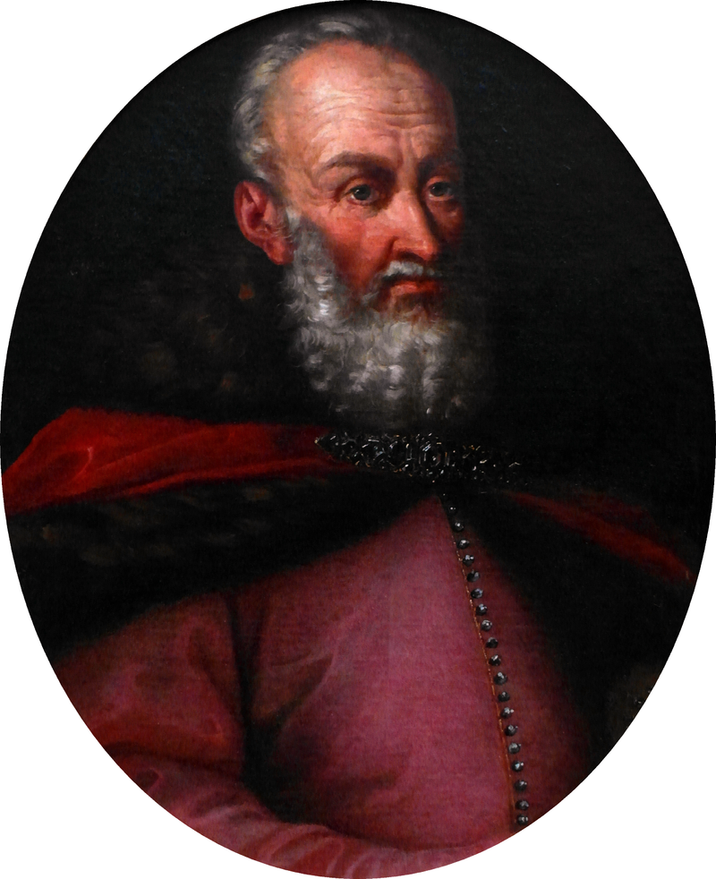
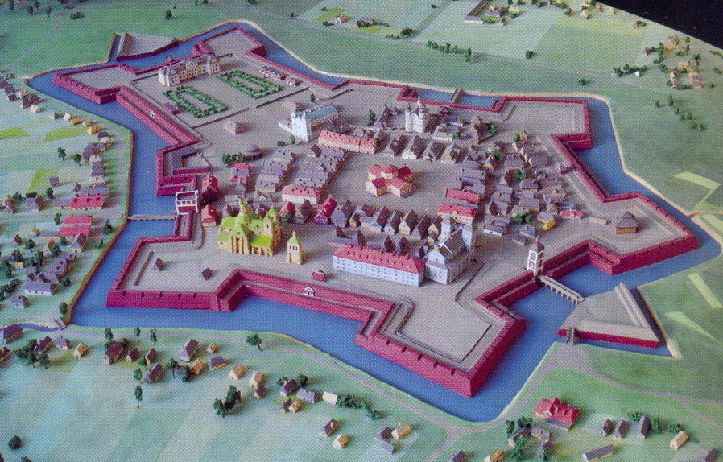
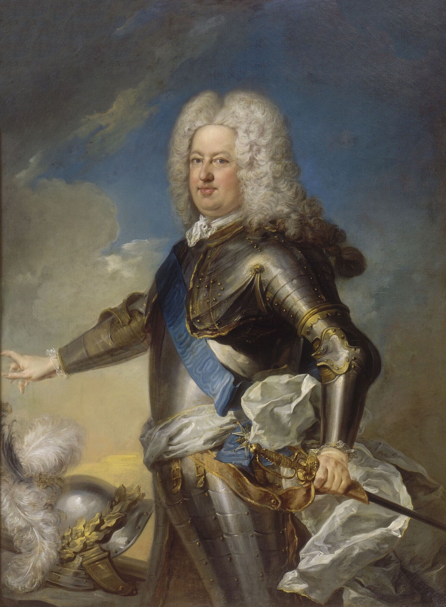
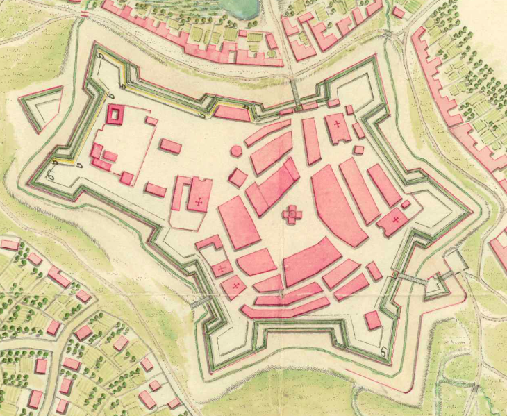
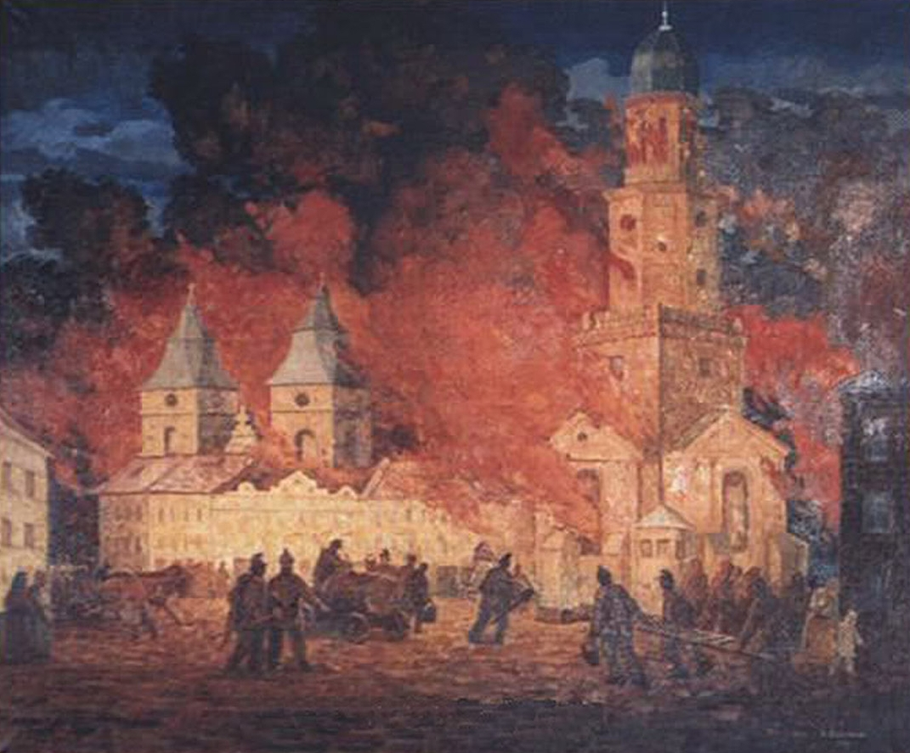
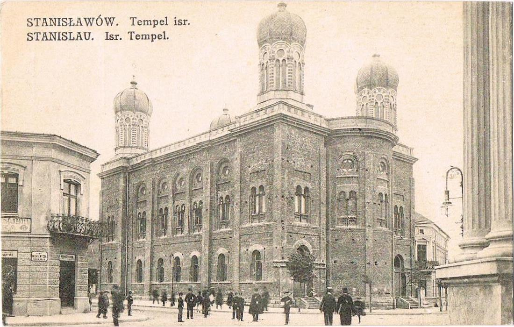
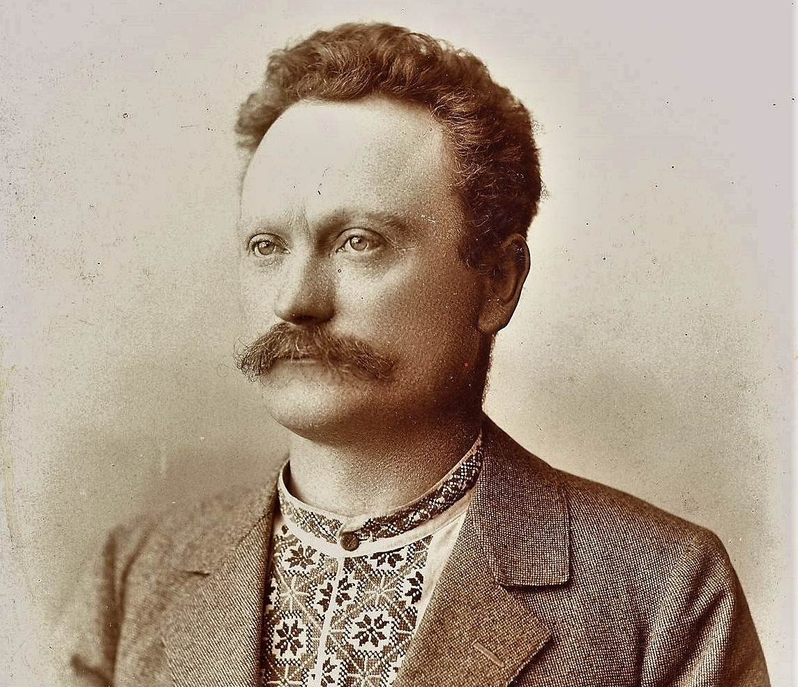

establishment 1662
The city Stanisławów (Ivano-Frankivsk nowadays) was erected by polish nobleman Stanisław Rewera Potocki in 1662 as a fortress to protect the Polish-Lithuanian Commonwealth from Tatar invasions. It was built out of a fort that was erected next to the villages of Zabolotiv (1435) and Knyahynyn (1449).The village of Zabolotiv and the land around it were purchased by Stanisław Rewera Potocki from another Polish nobleman Rzeczkowski. The city was named "Stanisławów" by Polish nobleman Andrzej Potocki, Stanisław's son, commemorating his father, his first-born son Stanisław Potocki or Saint Stanislaus.

Stanisław Rewera Potocki
Andrzej Potocki issued the declaration establishing the city of Stanisławów with Magdeburg rights on May 7, 1662. The Magdeburg rights allowed the local population to organize a city government, city council, city court and create various craftsman shops and independent craftsmen guilds. So, a city market was created. Magdeburg rights also guaranteed the freedom of religion to all the citizens.
The first architect of the Stanisławow fortress was Francisco Corasini from Avignon. The fortress was constructed in 1661-1662 in a form of hexagon surrounding Potocki palace. It had bastions, redoubts, fortification and two main gates known as Halytska gate (Halych City direction) and Tysmenytska gate (Tysmenytsia City direction). There was one more smaller gate known as Armenian or Zabolocka.
On September 17, 1662 Andrzej Potocki awarded the Jewish community of the city the right of self-government, which included permission to build their own schools, community buildings, and others. On May 23, 1663 the Armenian community of the city was allowed to build its own church as well, which was finished in 1665. Also in 1663 monks of Trinitarian Order from Warsaw arrived in Stanisławów. On April 24, 1664 the newly created city's Butchers Guild was awarded the "20-year freedom" exception from taxation. The City's Ratusz was finished in 1666.
By 1672 the fortress was restructured out of wood into brick. In 1672-1682 a new large fortified Potocki palace was built in the place of wooden one. Jews were granted the right to become permanent residents in 1672. The City's first Town Hall called "Ratusha" was erected and built out of wood in 1666. Stanisławow became the stronghold against Ottoman Empire forces in 17th century. It was attacked and besieged in early September 1676, but was not captured. Stanisławow fortifications were badly damaged after the Ottomans attacks and in 1677 the Sejm in Warsaw relieved the city of its tax duties. On September 12, 1683, Stanisław, the oldest son of the city founder, perished in battle against the Turks near Vienna. His body was transferred to his native city and buried in the Potocki family parish kosciol also known as Fara (Nowadays the Art Museum on Sheptytsky Square).

Old City reconstruction
The city was split into six small districts: midtown, where lived rich catholic population and patricians, pidzamche (subcastle), and four suburbs - Zabolotiv, Tysmenytia, Lysets, and Halych where members of the lower social classes lived. The Jews were assigned a specific "Street of the Jews" near the river, where they were allowed to live. By 1672 a wooden synagogue had been built.
18-19th Century
According to the 1709 census in the fortified midtown lived 62 Ruthenian families, 50 Armenian, 25 Jewish, and 9 Polish.
Due to numerous military conflicts, diseases, and other socially dangerous events, the population of Stanisławow by the end of the 18th century did not exceed 5,000.
Among such events was the invasion of the city by the Russian forces in course of the Great Northern War in 1706 that robbed the city in the revenge for Józef Potocki's switching the sides in the support of Stanisław Leszczyński. Stanisław I Leszczyński (1677 – 1766) was a King of Poland, Grand Duke of Lithuania, Duke of Lorraine and a count of the Holy Roman Empire. Józef Potocki (1673–1751) was a Polish nobleman, magnate, Great Hetman of the Crown. Józef was considered as the richest magnate in Poland at that time. In 1712 Stanisławow was robbed again during some inter-magnate conflicts when it was invaded by the forces of Polish Hetman Sieniawski. Adam Mikołaj Sieniawski (1666–1726) was a Polish nobleman, aristocrat and military leader. In 1710 a quarter of the city population (1332) died of typhus.

Stanisław I Leszczyński
The streets in the city were paved in cobbles around 1695. In 1728 the Akademia Stanislawowa was converted into Jesuit Collegium for which a separate building was erected in 1733–1743. In 1729 the Jesuit Church was built in Stanisławow. Around 1744 the city's Jewish community started the construction of a new synagogue which was finished in 1777, and in 1762 the Armenian Church was restored. In 1767 Stanisławow brewery was built as the oldest industrial venture, building of which was preserved to our days.
On February 26, 1761 the city was passed to Vincent Potocki who was a minor. So, the city was managed by his guardian Kateryna Kossakiwska who was also of the Potocki family. Eventually, the Potocki family went bankrupt and Stanisławow was passed to the state treasury. The city was extensively rebuilt during the Renaissance. Stanisławow was also an important centre of Armenian culture in Poland.
In 1772, after the Partition of Polish–Lithuanian Commonwealth, Stanisławow became a part of the Austro-Hungarian Empire and joined the autonomous Kingdom of Galicia and Lodomeria. The Austrian riflemen entered the city on October 25 of that year. The new administration ceased the functioning of Stanisławow fort. According to the "Vienna patent" since 1789 a city magistrate was introduced as a form of government headed by its burg-minister, while Stanisławow itself was returned into ownership of countess Kossakiwska until 1797. In 1801 due to the next bankruptcy Stanisławow was passed into the Austrian state possession. Since then and until 1820 all the fortifications in the city were disassembled and their materials were used to build new buildings and pave streets. Four city squares and 24 streets were cobblestoned with the rock material from the fortifications. The moats around the fortifications were evened out and changed into streets. The following streets go along the territory of the former moats today: Sichovych Striltsiv, Dnistrovska, and Vasyliyanok. By the start of the 20th century the adjacent villages of Knyahynyn and Sofiivka were fully incorporated into the city. Grunwaldska street, named by Stanisławow magistrate to commemorate the 500 Anniversary of the Battle of Grunwald, connected the railway station with the old town (midtown).

Stanisławów map 1800
The first State German-Polish Gymnasium, founded in 1774, became the center of education and culture in Stanisławow. The Ukrainian writer, historian, and ethnographer Ivan Vahylevych was among the famous students of the Gymnasium in 1824 - 1830. During the Spring of Nations, The Rus Council and National Guard were formed on May 8–10, 1848. On September 2, 1848 the first city newspaper was issued in the Polish language "Kurier Stanislawowski". In 1862 the first recorded city celebration took place to commemorate the 200th Anniversary of the foundation of Stanisławow. The city was connected to a railway network Lviv-Chernivtsi on September 1, 1866. At around that time plants and factories were built.
On September 28, 1868 Stanisławów experienced a huge disaster. The fire, which started at Lypova street, destroyed the third part of the city (about 260 buildings), Town Hall and the market. The city was almost completely rebuilt. The new Town Hall (Ratusha) was built in 1871-1915. During that time the center of the city slowly moved from the market square towards the Tysmenytsia Road (today Nezalezhnosti Street - "stometrivka"). Gas street lights were installed here in 1876 for the first time in all Galicia. Stanisławow Tempel Synagogue was built in 1895-1899. During World War I, the front-line was for some time in the area of the city, Russians and Austro-Hungarian forces fought several battles in Stanisławów and its suburbs. In 1917 the Russian forces burned the central districts during the Kerensky Offensive.

Stanisławow fire 1868

Ratusha 1871-1915

Stanisławow Synagogue 1900s
20th century
In October 1918, the Austro-Hungarian Empire collapsed after the defeat in First World War and the Western Ukrainian People's Republic (ZUNR) was proclaimed.
In 1919 (from January to May) Stanisławów served as a temporary capital of the West Ukrainian People's Republic. All the state affairs were taken place in the building of Dnister Hotel where the Act Zluky was composed. During the Polish-Soviet War in 1920, the Red Army entered the city for a brief period.

Stanisławow 1915-1917
Stanisławów became a part of the Second Polish Republic and an administrative center of Stanisławów Voivodeship (1920-1939). It was a large military base for the Polish Army, with two major units stationed there – 11th Infantry Division and Podolska Cavalry Brigade.
In 1939, after the invasion of Poland by German and Soviet forces, the territory was captured by the Soviets and was included into the Ukrainian SSR in September 1939.
Stanisławów was occupied by the Nazi Germany on July 26, 1941. During the occupation (1941–1944) Galicia became a part of the General Government.
The Red Army entered Stanisławów on July 27, 1944. So, the city became a part of the Soviet Union at the beginning of 1944. In 1958 the adjacent village of Pasichna was joined to the city.
In 1962 Stanisławów was renamed as Ivano-Frankivsk to honor the Ukrainian writer Ivan Franko (1856-1916) on the city's 300th anniversary.

Ivan Franko
In the early 1990s the city was a strong centre of the Ukrainian independence movement. Ivano-Frankivsk became a part of independent Ukraine from 24 august 1991.